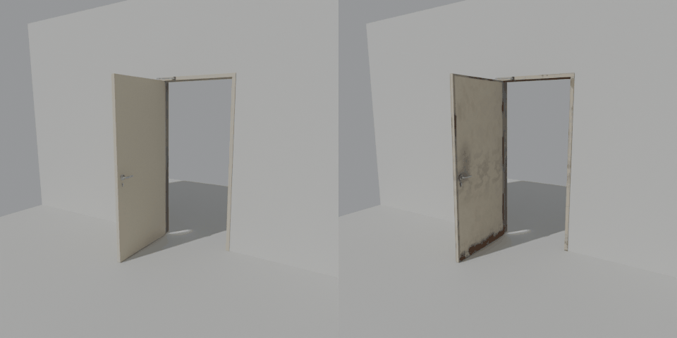
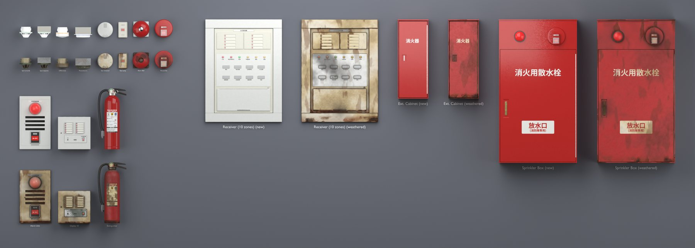

What we make
Built from real Japanese buildings日本の学校・病院・マンションで見かける設備を、そのまま 3D に
Every pack is researched from Japanese standards and real products, then modeled at real size. Each item comes in a clean new version and a worn, weathered version, so the same corridor can look brand new or abandoned.
実物の寸法や仕組みを調べて作っています。すべての品目に「新品」と「経年劣化」の 2 種類があります。
New & weathered
Rust, faded paint, dust and stains on every item.
新品と経年劣化の 2 種類
They move and light up
Doors swing, hatches open, shutters drop, lamps blink. Scripts included.
扉が動き、ランプが点滅
Unity, Unreal, Blender
FBX and GLB with PBR textures, prefabs and setup scripts.
FBX / GLB 形式
Real-world size
Sizes from common Japanese products, in meters.
実物どおりの寸法
In motion
A few of the moving parts動く仕組みの一部





See all packsパック一覧
Contents, supported software and where each pack is available.
About our process. The models, textures and scripts are made by programs (Blender Python and C#) written with the help of an AI assistant (Anthropic Claude), then checked and adjusted by hand in Blender, Unity and Unreal Engine. Designs are generic: no real brand names, logos or model numbers.
モデル・テクスチャ・スクリプトは、AI(Claude)を使って書いたプログラムで作り、作者が確認・調整しています。実在のブランド名やロゴは入れていません。